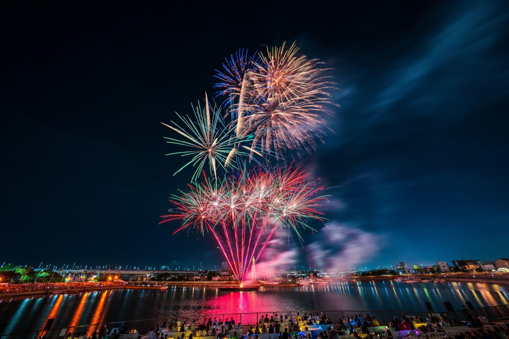
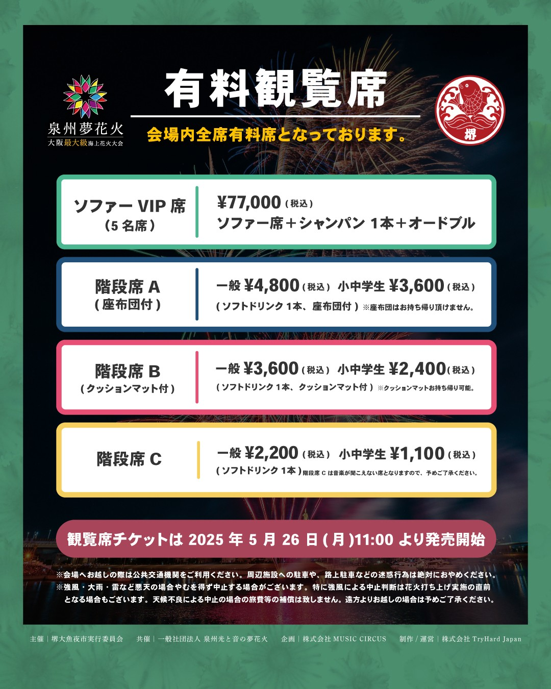
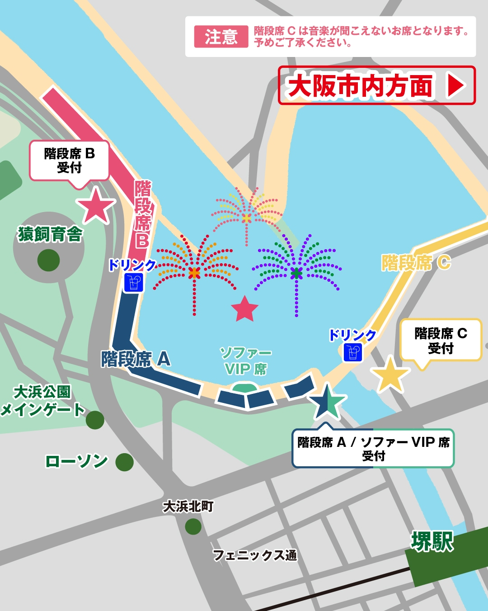

Summer fireworks on the southern side of Osaka Bay, held at the seaside in Izumisano City.


Event Details
Date
Aug 22, 2026 (Sat)
Prefecture
Osaka
Time
19:15–20:05
Venue
SENNAN LONG PARK
Fireworks
未公表
Paid Seats
Available
Food Stalls
Available
Access
About a 10-minute walk from Tarui Station on the Nankai Main Line.
Rain Policy
Cancelled in case of inclement weather.
Notes
Summer fireworks on the southern side of Osaka Bay, held at the seaside in Izumisano City.
Last updated: 2026-06-14